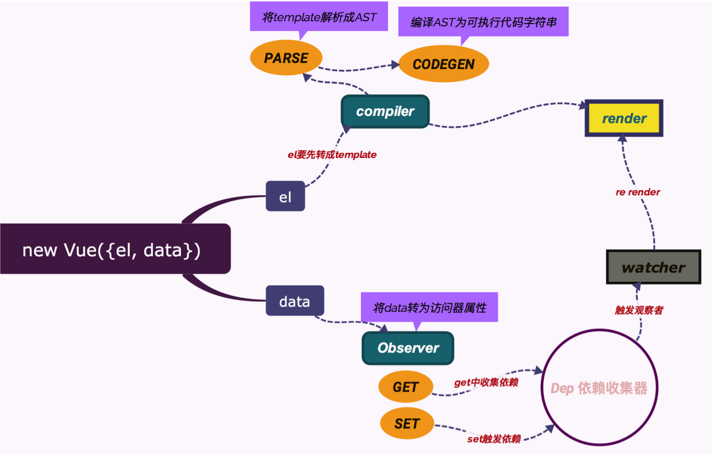

寻找vue的构造函数
一：当我们运行npm run dev的时候可查配置文件为scripts/config.js,从中可知入口文件entry-runtime-with-compiler.js
二：从上述文件import Vue from './runtime/index'可看出vue的入口文件，进入该文件
三：从上述文件import Vue from 'core/index'可得到Vue最终文件导出时要走的文件，进入该文件
四：从上述文件import Vue from './instance/index'可知Vue的构造函数
五：在Vue的实例化文件中我们可看出它引入依赖，定义 Vue 构造函数，然后以Vue构造函数为参数，调用了五个方法，最后
导出Vue，打开这五个文件，找到相应的方法，你会发现，这些方法的作用，就是在 Vue 的原型 prototype 上挂载方法或属
性，经历了这五个方法后的Vue会变成这样：
// initMixin(Vue) src/core/instance/init.js
Vue.prototype._init = function (options?: Object) {}
// stateMixin(Vue) src/core/instance/state.js
Vue.prototype.$data
Vue.prototype.$set = set
Vue.prototype.$delete = del
Vue.prototype.$watch = function(){}
// renderMixin(Vue) src/core/instance/render.js
Vue.prototype.$nextTick = function (fn: Function) {}
Vue.prototype._render = function (): VNode {}
Vue.prototype._s = _toString
Vue.prototype._v = createTextVNode
Vue.prototype._n = toNumber
Vue.prototype._e = createEmptyVNode
Vue.prototype._q = looseEqual
Vue.prototype._i = looseIndexOf
Vue.prototype._m = function(){}
Vue.prototype._o = function(){}
Vue.prototype._f = function resolveFilter (id) {}
Vue.prototype._l = function(){}
Vue.prototype._t = function(){}
Vue.prototype._b = function(){}
Vue.prototype._k = function(){}
// eventsMixin(Vue) src/core/instance/events.js
Vue.prototype.$on = function (event: string, fn: Function): Component {}
Vue.prototype.$once = function (event: string, fn: Function): Component {}
Vue.prototype.$off = function (event?: string, fn?: Function): Component {}
Vue.prototype.$emit = function (event: string): Component {}
// lifecycleMixin(Vue) src/core/instance/lifecycle.js
Vue.prototype._update = function (vnode: VNode, hydrating?: boolean) {}
Vue.prototype.$forceUpdate = function () {}
Vue.prototype.$destroy = function () {}
六：我们往上一步进入src/core/index.js，可知initGlobalAPI 的作用是在Vue构造函数上挂载静态属性和方法
Vue 在经过initGlobalAPI 之后，会变成这样：
// src/core/index.js / src/core/global-api/index.js
Vue.config
Vue.util = util
Vue.set = set
Vue.delete = del
Vue.nextTick = util.nextTick
Vue.options = {
components: {
KeepAlive
},
directives: {},
filters: {},
_base: Vue
}
Vue.use
Vue.mixin
Vue.cid = 0
Vue.extend
Vue.component = function(){}
Vue.directive = function(){}
Vue.filter = function(){}
Vue.prototype.$isServer
Vue.version = '__VERSION__'
七：往上一步进入runtime/index.js可看出该文件主要做了这几件事情：
1、覆盖 Vue.config 的属性，将其设置为平台特有的一些方法
2、Vue.options.directives 和 Vue.options.components 安装平台特有的指令和组件
3、在 Vue.prototype 上定义 __patch__ 和 $mount
4、经过该文件处理之后Vue 变成下面这个样子:
// 安装平台特定的utils
Vue.config.isUnknownElement = isUnknownElement
Vue.config.isReservedTag = isReservedTag
Vue.config.getTagNamespace = getTagNamespace
Vue.config.mustUseProp = mustUseProp
// 安装平台特定的 指令 和 组件
Vue.options = {
components: {
KeepAlive,
Transition,
TransitionGroup
},
directives: {
model,
show
},
filters: {},
_base: Vue
}
Vue.prototype.__patch__
Vue.prototype.$mount
八：最后一个处理 Vue 的文件就是入口文件 web-runtime-with-compiler.js 了，该文件做了两件事：
1、缓存来自runtime/index.js文件的 $mount 函数，然后覆盖覆盖了 Vue.prototype.$mount
2、在 Vue 上挂载 compile 为compileToFunctions 函数，它的作用就是将模板 template 编译为render函数
一个贯穿始终的例子
最简单的运行例子：
let v = new Vue({
el: '#app',
data: {
a: 1,
b: [1, 2, 3]
}
})
从Vue的构造函数可知它会去调用_init方法来完成初始化，其方法精简省略之后如下：
Vue.prototype._init = function (options?: Object) {
const vm: Component = this
// a uid
vm._uid = uid++
// a flag to avoid this being observed
vm._isVue = true
// merge options
if (options && options._isComponent) {
// optimize internal component instantiation
// since dynamic options merging is pretty slow, and none of the
// internal component options needs special treatment.
initInternalComponent(vm, options)
} else {
vm.$options = mergeOptions(
resolveConstructorOptions(vm.constructor),
options || {},
vm
)
}
// expose real self
vm._self = vm
initLifecycle(vm)
initEvents(vm)
initRender(vm)
callHook(vm, 'beforeCreate')
initInjections(vm) // resolve injections before data/props
initState(vm)
initProvide(vm) // resolve provide after data/props
callHook(vm, 'created')
/* istanbul ignore if */
if (process.env.NODE_ENV !== 'production' && config.performance && mark) {
vm._name = formatComponentName(vm, false)
mark(endTag)
measure(`vue ${vm._name} init`, startTag, endTag)
}
if (vm.$options.el) {
vm.$mount(vm.$options.el)
}
}
注释一：在 this 对象上定义了两个属性：_uid 和 _isVue，然后判断有没有定义 options._isComponent，在使用 Vue 开发项目
的时候我们是不会使用 _isComponent 选项的，这个选项是 Vue 内部使用的
注释二：Vue 第一步所做的事情就来了：使用策略对象合并参数选项，可以发现，Vue使用 mergeOptions 来处理我们调用Vue时传
入的参数选项(options)，然后将返回值赋值给 this.$options (vm === this)，传给 mergeOptions 方法三个参数分析可知第一
个参数Vue.options第二个参数是我们调用Vue构造函数时的参数选项，第三个参数是 vm 也就是 this 对象
注释三：mergeOptions方法比较大注意几个重要的地方，config 对象引用自 src/core/config.js 文件，最终的结果就是在strats
下添加了相应的生命周期选项的合并策略函数为 mergeHook，添加指令(directives)、组件(components)、过滤器(filters)等选项
的合并策略函数为 mergeAssets
LIFECYCLE_HOOKS.forEach(hook => {
strats[hook] = mergeHook
})
ASSET_TYPES.forEach(function (type) {
strats[type + 's'] = mergeAssets
})
注释四：由代码可知我们传进来的构造函数的参数其中 el 选项会使用 defaultStrat 默认策略函数处理，data 选项则会使用
strats.data 策略函数处理，并且根据 strats.data 中的逻辑，strats.data 方法最终会返回一个函数：mergedInstanceDataFn
进行这些处理之后的参数返回出来并将最终的值赋值给实例下的 $options 属性
合并完选项之后，Vue 第二部做的事情就来了：初始化工作与Vue实例对象的设计
调用了四个 init* 方法分别为：initLifecycle、initEvents、initRender、initState，且在 initState 前后分别回调了生命
周期钩子 beforeCreate 和 created，我们可以看到在之后才运行vm.$mount()去装载，所以说不能在created的时候去操作dom
因为此时dom还没有创建
综上所述：按照我们的例子那样写，初始化工作只包含两个主要内容即：initState中initData 和 initRender
通过 initData 看Vue的数据响应系统
Vue的数据响应系统包含三个部分：Observer、Dep、Watcher。这里简单的说一下，我们还是先看一下 initData 中的代码：
function initData (vm: Component) {
let data = vm.$options.data
data = vm._data = typeof data === 'function'
? getData(data, vm)
: data || {}
if (!isPlainObject(data)) {
data = {}
process.env.NODE_ENV !== 'production' && warn(
'data functions should return an object:\n' +
'https://vuejs.org/v2/guide/components.html#data-Must-Be-a-Function',
vm
)
}
// proxy data on instance
const keys = Object.keys(data)
const props = vm.$options.props
const methods = vm.$options.methods
let i = keys.length
while (i--) {
const key = keys[i]
if (process.env.NODE_ENV !== 'production') {
if (methods && hasOwn(methods, key)) {
warn(
`Method "${key}" has already been defined as a data property.`,
vm
)
}
}
if (props && hasOwn(props, key)) {
process.env.NODE_ENV !== 'production' && warn(
`The data property "${key}" is already declared as a prop. ` +
`Use prop default value instead.`,
vm
)
} else if (!isReserved(key)) {
proxy(vm, `_data`, key)
}
}
// observe data
observe(data, true /* asRootData */)
}
注释一：先拿到 data 数据：let data = vm.$options.data，大家还记得此时 vm.$options.data 的值应该是通过 mergeOptions
合并处理后的 mergedInstanceDataFn 函数吗？所以在得到 data 后，它又判断了 data 的数据类型是不是 ‘function’，最终的
结果是：data 还是我们传入的数据选项的 data
注释二：在实例对象上定义 _data 属性，该属性与 data 是相同的引用
注释三：一个 while 循环，循环的目的是在实例对象上对数据进行代理，这样我们就能通过 this.a 来访问 data.a 了，代码的处
理是在proxy函数中，该函数利用es5在实例对象上设置与 data 属性同名的访问器属性，然后使用 _data 做数据劫持，如下：
function proxy (target: Object, sourceKey: string, key: string) {
sharedPropertyDefinition.get = function proxyGetter () {
return this[sourceKey][key]
}
sharedPropertyDefinition.set = function proxySetter (val) {
this[sourceKey][key] = val
}
Object.defineProperty(target, key, sharedPropertyDefinition)
}
做完数据的代理，就正式进入响应系统observe(data)，数据响应系统主要包含三部分：Observer、Dep、Watcher，代码分别存放
在：observer/index.js、observer/dep.js 以及 observer/watcher.js 文件中阅读代码之后我大概整理了一下他的实现方法就
像我下面写的这样可以用node运行一下看看效果：
// Observer
class Observer {
constructor (data) {
this.walk(data)
}
walk (data) {
// 遍历
let keys = Object.keys(data)
for(let i = 0; i < keys.length; i++){
defineReactive(data, keys[i], data[keys[i]])
}
}
}
function defineReactive (data, key, val) {
//循环设置防止一个属性的值是对象
observer(val)
let dep = new Dep()
//data下的每一个属性都有一个唯一的Dep对象，在get中收集仅针对该属性的依赖，然后在 set 方法中触发所有收集的依赖
Object.defineProperty(data, key, {
enumerable: true,
configurable: true,
get: function () {
dep.depend()
return val
},
set: function (newVal) {
if(val === newVal){
return
}
observer(newVal)
dep.notify()
}
})
}
function observer (data) {
if(Object.prototype.toString.call(data) !== '[object Object]') {
return
}
new Observer(data)
}
//一个依赖收集器
class Dep {
constructor () {
this.subs = []
}
depend () {
//存在一个属性设置多个监控watch的情况
this.subs.push(Dep.target)
}
notify () {
for(let i = 0; i < this.subs.length; i++){
this.subs[i].fn()
}
}
}
Dep.target = null
function pushTarget(watch){
Dep.target = watch
}
// 构造watch对象
class Watch {
constructor (exp, fn) {
this.exp = exp
this.fn = fn
pushTarget(this)
//触发相应属性访问器中get函数从而添加进一个watch
data[exp]
}
}
var data = {
a: 1,
b: {
c: 2
}
}
observer(data)
new Watch('a', () => {
console.log(9)
})
//同一个属性可以设置多个监控函数,就是放入上面的sub数组中保存而已
new Watch('a', () => {
console.log(90)
})
new Watch('b.c', () => {
console.log(80)
})
setTimeout(() => {
data.a = 2
}, 1000)
Vue的 render(渲染) 与 re-render(重新渲染)
在_init 方法中，因为我们的例子中传递了 el 选项，所以下面的代码会执行：
if (vm.$options.el) {
vm.$mount(vm.$options.el)
}
这里，调用了 $mount 方法，在还原Vue构造函数的时候，我们整理过所有的方法，其中 $mount 方法在两个地方出现过:
1、在runtime/index.js 文件中：
Vue.prototype.$mount = function (
el?: string | Element,
hydrating?: boolean
): Component {
el = el && inBrowser ? query(el) : undefined
return mountComponent(this, el, hydrating)
}
它的作用是通过 el 获取相应的DOM元素，然后调用 lifecycle.js 文件中的 _mount 方法
2、在entry-runtime-with-compiler.js文件中：
const mount = Vue.prototype.$mount //缓存lifecycle中的$mount
Vue.prototype.$mount = function (
el?: string | Element,
hydrating?: boolean
): Component {
el = el && query(el)
//不予许在body节点和html节点上面装载
if (el === document.body || el === document.documentElement) {
process.env.NODE_ENV !== 'production' && warn(
`Do not mount Vue to html or body - mount to normal elements instead.`
)
return this
}
const options = this.$options
// 判断有没有传递 render 选项，如果有直接调用来自runtime/index.js文件的$mount 方法
if (!options.render) {
let template = options.template
//查看有没有template选项，如果有就使用 compileToFunctions 函数根据其内容编译成 render 函数
if (template) {
if (typeof template === 'string') {
if (template.charAt(0) === '#') {
template = idToTemplate(template)
/* istanbul ignore if */
if (process.env.NODE_ENV !== 'production' && !template) {
warn(
`Template element not found or is empty: ${options.template}`,
this
)
}
}
} else if (template.nodeType) {
template = template.innerHTML
} else {
if (process.env.NODE_ENV !== 'production') {
warn('invalid template option:' + template, this)
}
return this
}
} else if (el) {
//如果没有template则查看有没有el选项，如有就使用compileToFunctions函数将其编译成render函数
//getOuterHTML方法可获取节点内容且保证只有一个根节点
template = getOuterHTML(el)
}
if (template) {
/* istanbul ignore if */
if (process.env.NODE_ENV !== 'production' && config.performance && mark) {
mark('compile')
}
//将编译成的render函数挂载到this.$options属性,并调用缓存下来的runtime/index.js文件中的$mount方法
const { render, staticRenderFns } = compileToFunctions(template, {
shouldDecodeNewlines,
shouldDecodeNewlinesForHref,
delimiters: options.delimiters,
comments: options.comments
}, this)
options.render = render
options.staticRenderFns = staticRenderFns
/* istanbul ignore if */
if (process.env.NODE_ENV !== 'production' && config.performance && mark) {
mark('compile end')
measure(`vue ${this._name} compile`, 'compile', 'compile end')
}
}
}
return mount.call(this, el, hydrating)
}
经过上面的步骤最终目的是生成 render 函数，然后再调用 lifecycle.js 文件中的mountComponent方法，我们看看这个方法做了
什么事情，查看 mountComponent 方法的代码，这是简化过得：
function mountComponent (
vm: Component,
el: ?Element,
hydrating?: boolean
): Component {
vm.$el = el
// 触发 beforeMount 生命周期钩子
callHook(vm, 'beforeMount')
if (process.env.NODE_ENV !== 'production' && config.performance && mark) {
updateComponent = () => {
const name = vm._name
const id = vm._uid
const startTag = `vue-perf-start:${id}`
const endTag = `vue-perf-end:${id}`
mark(startTag)
const vnode = vm._render()
mark(endTag)
measure(`vue ${name} render`, startTag, endTag)
mark(startTag)
vm._update(vnode, hydrating)
mark(endTag)
measure(`vue ${name} patch`, startTag, endTag)
}
} else {
updateComponent = () => {
vm._update(vm._render(), hydrating)
}
}
//每次更新时候会出发updateComponent方法
new Watcher(vm, updateComponent, noop, null, true /* isRenderWatcher */)
hydrating = false
// 如果是第一次mount则触发 mounted 生命周期钩子
if (vm.$vnode == null) {
vm._isMounted = true
callHook(vm, 'mounted')
}
return vm
}
当更新的时候vm._render() 函数被第一个执行，该函数在 src/core/instance/render.js 中，_render方法看
代码可知首先从 vm.$options 中解构出render函数，vm.$options.render方法是在entry-runtime-with-compiler.js
文件中通过 compileToFunctions 方法将 template 或 el 编译而来的。解构出 render 函数后，接下来便执行了该方法：
vnode = render.call(vm._renderProxy, vm.$createElement)
其中使用 call 指定了 render 函数的作用域环境为 vm._renderProxy，这个属性在我们整理实例对象的时候知道，他是在
Vue.prototype._init 方法中被添加的，即：vm._renderProxy = vm，其实就是Vue实例对象本身，然后传递了一个参数
vm.$createElement我们已经知道 render 函数是从 template 或 el 编译而来的，该应该是返回一个虚拟DOM对象
我们可以打印出render函数发现和我们自己写 render 函数很，因为 render 函数的作用域被绑定到了Vue实例，即：
render.call(vm._renderProxy, vm.$createElement)，所以代码中 _c、_v、_s 以及变量相当于Vue实例下的方法和变量
而诸如 _c、_v、_s 这样的方法在整理Vue构造函数的时候知道，他们在src/core/instance/render.js 文件中的
renderMixin中installRenderHelpers方法中定义，除了这些之外还有诸如：_l、 _m、 _o 等等。例如 _l 就在我们使用v-for
指令的时候出现的
vm_render 方法最终返回一个 vnode 对象，即虚拟DOM，然后作为 vm_update 的第一个参数传递了过去，我们看一下vm_update
的逻辑，在 src/core/instance/lifecycle.js 文件中有这么一段代码：
if (!prevVnode) {
// 初始render
//如果还没有 prevVnode 说明是首次渲染，直接创建真实DOM
vm.$el = vm.__patch__(
vm.$el, vnode, hydrating, false /* removeOnly */,
vm.$options._parentElm,
vm.$options._refElm
)
vm.$options._parentElm = vm.$options._refElm = null
} else {
// updates
//如果已经有了prevVnode说明不是首次渲染，那就用patch算法进行必要的DOM操作。这就是Vue更新DOM的逻辑
vm.$el = vm.__patch__(prevVnode, vnode)
}
注意上面的__patch__ 方法是在runtime/index.js中定义的Vue.prototype.__patch__ = inBrowser ? patch : noop
而这个patch方法就来自core.vdom中，这个文件夹中就是虚拟dom的算法可以自行去研究
用一张详细一点的图表示就是这样的：

到此，我们从大体流程，挑着重点的走了一遍Vue，但是还有很多细节我们没有提及，比如：
1、将模板转为 render 函数的时候，实际是先生成的抽象语法树（AST），再将抽象语法树转成的 render 函数，而且这
一整套的代码我们也没有提及，因为他在复杂了，其实这部分内容就是在玩正则
2、我们也没有详细的讲 Virtual DOM 的实现原理
3、我们的例子中仅仅传递了 el ，data 选项，大家知道 Vue 支持的选项很多，比如我们都没有讲到，但都是触类旁通的
比如你搞清楚了 data 选项再去看 computed 选项或者 props 选项就会很容易，比如你知道了 Watcher 的工作机制再去
看 watch 选项就会很容易